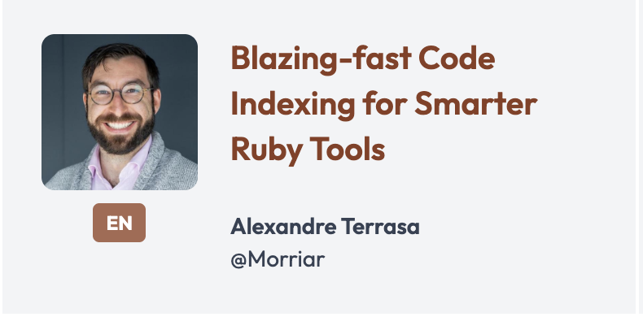
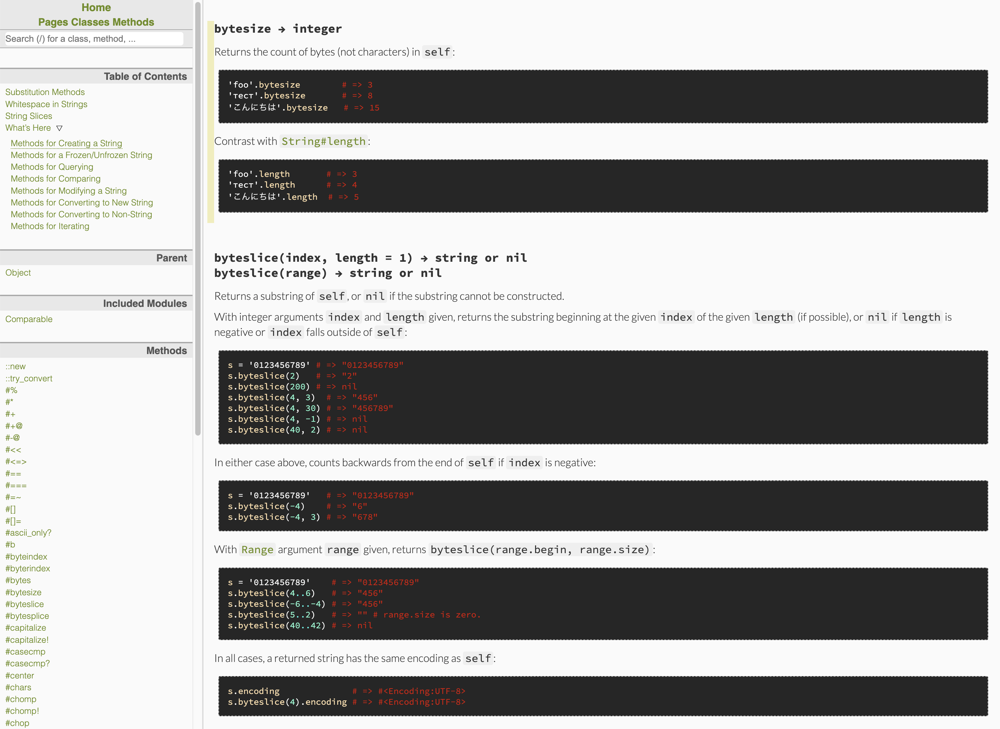
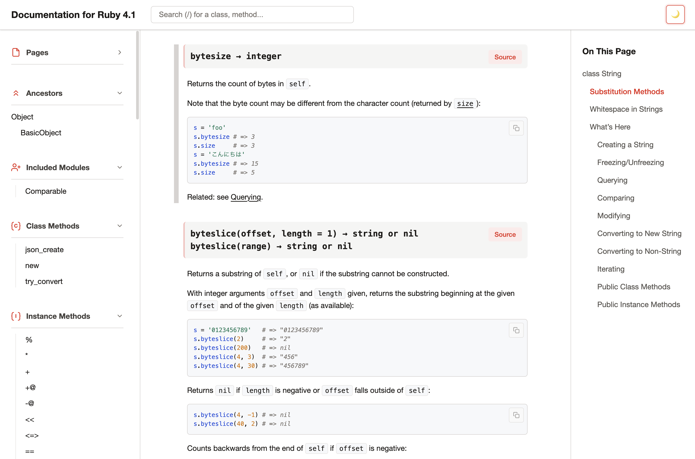
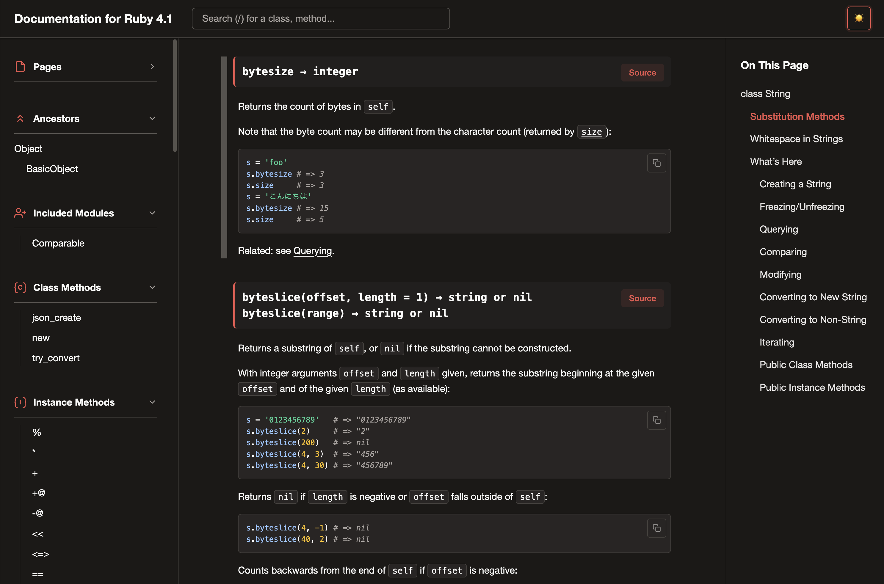
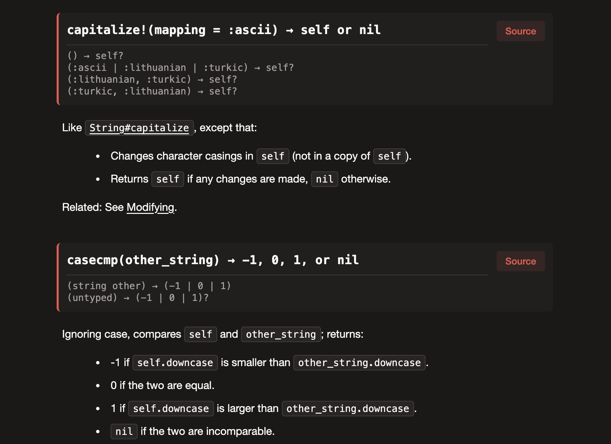

Hi everyone. Today I want to talk about the future of Ruby documentation — where we've been and where we're going.
About me
Ruby committer — IRB, RDoc, Ruby LSP, Rubydex, a bit of ZJIT
Ruby DX team @Shopify
02
I'm Stan Lo. I'm a Ruby committer and I work on several Ruby tools — IRB, RDoc, Ruby LSP, and a bit of ZJIT. I'm part of the Ruby Developer Experience team at Shopify.
Rubydex
A Ruby code indexer — Shopify/rubydex
Static code intelligence for Ruby

03
One project I want to briefly mention is Rubydex — it's a Ruby code indexer my team is building. It provides static code intelligence for Ruby: class/module resolution, method lookup, reference finding, etc. It runs very fast and it built to be a good foundation for other tools.
If you're interested in how this connects with Ruby's tooling and type system, my colleague Alexandre Terrasa is giving a talk about it tomorrow. Please check it out.
The future of Ruby's documentation is about AI
04
I want to start with a direct claim. The future of Ruby's documentation is about AI. That might sound like a stretch, but let me explain what I mean.
What AI needs from documentation
Clear, accurate documentation
Markdown — it reads and writes it natively
Clear intent — type signatures tell it what code expects
05
AI needs three things from documentation. First, accuracy — AI trains on docs and references them when generating code. Second, Markdown — the format AI models are most fluent in. Third, clear intent — type signatures give AI structured information about what a method expects and returns.
What helps AI write documentation
Quick, deterministic feedback
Coverage checks, missing reference warnings
06
When AI agents write or update documentation, they need fast feedback — did I break a cross-reference, is there a missing description? Deterministic checks like coverage reports and reference validation let agents iterate without guessing.
All of these help human developers too.
These aren't AI requirements — they're good documentation requirements.
07
Here's the thing. Everything I just described — clear docs, Markdown, type signatures, fast feedback — these aren't just AI requirements. They're what makes documentation better for everyone. The AI lens just makes the case more urgent.
RDoc wasn't providing these
Darkfish theme: dated design, no mobile support
No live preview — regenerate and open HTML files manually to see changes
Incomplete Markdown support, no RBS info
Parser couldn't handle modern Ruby
08
RDoc has been Ruby's documentation tool for 20+ years. It works. But the Darkfish theme was dated with no mobile support. There was no live preview — you had to regenerate and open HTML files manually after every change. Markdown support was incomplete, type signatures didn't exist in the output, and the parser couldn't handle modern Ruby syntax.
So here's what we did.
...to make RDoc work for us, and our agents.
09
Rather than wait for a perfect plan, we started fixing things. Here's what changed in the past year and a half.
Before: Darkfish

10
This is Darkfish — the theme RDoc has shipped for years. It served as for many years. But it's so dated we shouldn't need to see it again.
After: Aliki

11
And this is Aliki — the new default theme shipping in Ruby 4.0. Here's the light mode. Clean layout, redesigned left sidebar, better contrast and highlight, and "On This Page" outline on the right for navigation.
After: Aliki (dark mode)

12
And here's dark mode — follows your system preference automatically.
Aliki
Dark mode with system preference detection
Responsive layout
Improved search algorithm and UI
Automatically generated ToC sidebar
Named after my cat. Ships as the default theme in Ruby 4.0.
13
The key features: dark mode that follows system preference, responsive layout, improved search algorithm and UI, and automatically generated ToC sidebar. Named after my cat. Ships as the default in Ruby 4.0.
rdoc --server
14
This is rdoc --server. Edit a file, the browser refreshes. Click to play the demo.
rdoc --server
Changes reflected in browser automatically
Zero external dependencies — uses Ruby's TCPServer
Incremental re-parsing — shorter response, not instant (yet)
15
Zero external dependencies — it uses Ruby's built-in TCPServer. A background watcher polls file mtimes and only re-parses files that changed. I also added make html-server to ruby/ruby so you can preview core documentation the same way.
The parser problem
RDoc's Ruby parser used Ripper — slow, token-stream based
Couldn't handle modern Ruby syntax (e.g. endless methods)
Parser logic and comment handling tightly coupled
16
RDoc's Ruby parser was built on Ripper, which is slow and gives you a token stream rather than an AST. It couldn't handle modern Ruby syntax — pattern matching, endless methods, and so on. And the parser logic was tightly coupled to comment handling, making fixes risky.
tompng's rewrites
How RDoc parses Ruby — Ripper → Prism
How RDoc processes comments — fixed 30+ documented bugs
How RDoc formats text — replaced string macros with a structured parser
43 PRs over 20 months — tompng (Tomoya Ishida)
17
tompng — Tomoya Ishida — rewrote three core parts of RDoc. How it parses Ruby, moving from Ripper to Prism. How it processes comments — the old system had 30 documented bugs, things like include/extend leaking to the wrong class, or :nodoc: only applying to the first attribute. And how it formats text — replacing string-based macros with a structured parser. 43 PRs over 20 months.
Bug fix example: __FILE__
Source: # Returns __FILE__ as a string
Before
Returns FILE as a string
After
Returns __FILE__ as a string
Same fix for __send__, __dir__, and similar identifiers.
18
The old formatter saw underscores and assumed they meant emphasis. So __FILE__ in a doc comment became italic-bold FILE. The new parser understands these are Ruby keywords, not formatting. Same fix handles __send__, __dir__, and any double-underscore identifier.
What the rewrites changed
Before (Ripper tokens)
# Token-stream parsing# Manual state tracking# Breaks on new syntaxcase token_type
when:on_kw
handle_keyword(token)
After (Prism AST)
# Structured AST visitor# Node types are explicit# New syntax handled by Prismdefvisit_def_node(node)
process_method(node)
end
Prism is ~30% faster than Ripper on RDoc's own codebase (112 files: 0.69s vs 0.97s).
19
The left side is what token-stream parsing looks like — manual state tracking that breaks when new syntax appears. The right side is a Prism AST visitor — explicit node types, new syntax handled by Prism itself. And it's not just cleaner — we benchmarked both parsers on RDoc's own 112 Ruby files. Prism is about 30% faster than Ripper. So that's the parser foundation. Now let's talk about something that directly affects how people write documentation.
Markdown in RDoc
RDoc has supported Markdown since 2011
But the parser was buggy — low compatibility with GitHub Flavored Markdown
The internal pipeline made fixes difficult
20
RDoc has actually supported Markdown since 2011. But the support was incomplete and buggy — features like strikethrough, tables, and heading anchors were silently broken. Contributors would use Markdown expecting it to work like GitHub, and it didn't. The reason is the internal pipeline, which I'll show you next.
The coupling problem
Markdown parser
↓
RDoc parser
↓
Shared InlineParser & Formatters
↓
HTML output
Every Markdown fix is a two-format fix.
21
This is why Markdown support took so long. Both parsers — Markdown and RDoc — feed into the same shared pipeline. The Markdown parser actually outputs RDoc markup strings, which get re-parsed by the shared InlineParser. So you can't change the shared code without verifying both formats still work.
Example: ~~strikethrough~~
~~text~~
→
<del>text</del>
→
InlineParser doesn't know <del>
→
Broken
Fix touches shared code → must verify RDoc markup still works too.
22
Here's a concrete example. Markdown strikethrough — tilde-tilde-text — the parser outputs it as a del HTML string. That string goes to the shared InlineParser, which didn't recognize del. So strikethrough was silently broken for years. Fixing it means modifying the shared InlineParser, then verifying RDoc markup still works too.
Bash syntax highlighting
Before
geminstall rdocrdoc--servercurllocalhost:4000
Language tag ignored — highlighted as Ruby
After
geminstall rdocrdoc--servercurllocalhost:4000
Recognized as bash — commands in blue, options in cyan
23
Before, the language tag on fenced code blocks was completely ignored. Everything was passed through the Ruby highlighter. So bash commands like gem install got colored as Ruby identifiers, and --server became a Ruby operator. Now the language tag is respected — bash, c, sh, shell, and console are all recognized.
Important for Ruby's C extension documentation on docs.ruby-lang.org.
24
C syntax highlighting matters because a large part of Ruby's core API is implemented in C. On docs.ruby-lang.org, method source is shown inline — and before this change, C code had no highlighting at all. Now keywords, types, and function names are colored.
Inline styling in tables
Before
Name
Type
age
'Integer`
Backtick code broken in table cells
After
Name
Type
age
Integer
Backticks, links, bold, italic now work in cells
25
Markdown in table cells was broken — backtick code, links, bold, italic didn't render. This was fixed in PR #1386. Now table cells support the same inline styling as regular paragraphs.
GFM compatibility
Feature
GFM
RDoc now
v6.11.0
Headings, paragraphs, lists
✅
✅
✅
Fenced code + language highlight
✅
✅
⚠️
Strikethrough
✅
✅
❌
Table inline styling
✅
✅
❌
GitHub-style heading anchors
✅
✅
❌
Ordered lists, nested lists
✅
⚠️
⚠️
Tilde fences, backslash breaks
✅
❌
❌
Slowly ticking up. Tracked with a GFM spec comparison test suite.
26
This is the current state of GFM compatibility. The bold items in the "RDoc now" column are things we fixed since v6.11.0. We're not at full GFM compatibility yet — ordered lists and tilde fences are still on the list. But we now have a spec comparison test suite that tracks exactly where we stand, so we can measure progress systematically.
RBS type signatures
# The #: inline annotation syntax#: (String name, ?Integer age) -> Userdefcreate_user(name, age = nil)
# ...end
RDoc extracts #: annotations and displays type signatures in HTML and ri. Type names are linked to their documentation.
27
RBS inline annotations use the #: syntax. You write the type signature directly above the method. RDoc parses these, validates them through the RBS parser, and displays them in both HTML output and ri terminal docs. The type names in the output are clickable links.
RBS in HTML output

28
This is what it looks like in the Aliki theme. The type signature appears as a card above the method documentation — you can see the parameter types and return type at a glance. The type names are clickable links. Types aren't just decoration — they're navigation.
RDoc's priority
Better contributing experience
Target: Ruby's official docs and gem docs
Make documentation easier to write and maintain
29
Looking ahead, the priority is clear: make it easier to contribute to Ruby documentation. That means both docs.ruby-lang.org and gem documentation. Lower the barriers for writing, reviewing, and maintaining docs.
Whether users adopt a type checker is their choice — RDoc supports both
30
RBS signatures are a start — structured, machine-readable contracts in the source. We'll revisit supported directives to make them clearer. And I want to be explicit: whether users adopt a type checker is their choice. RDoc will support both typed and untyped codebases.
Contributing
Better tools for writing docs
For humans: rdoc --server (live preview)
For AI agents: rdoc -C (coverage — what's missing)
For AI agents: ri --format=markdown (query docs directly)
31
For humans, server mode gives you live preview while writing. For AI agents, rdoc -C gives coverage reports — what's undocumented, what has broken references. And ri --format=markdown lets agents query Ruby documentation directly in a format they're fluent in.
LLM-ready docs
For consuming documentation
For humans: Aliki improved the reading experience
For AI: we evaluated and found nothing proven yet
32
On the consumption side, Aliki addressed the human experience — dark mode, search, responsive layout. For AI consumption, we looked at the options and found nothing with proven impact. Let me walk through what we evaluated.
LLM-ready docs
Rustdoc: community and maintainers said no
RFC #3751 proposed LLM-friendly text output for Rustdoc
T-rustdoc team: "Very likely not the desired format within 3 months, never mind 3 years"
Community consensus: "This should be an external tool"
¹ github.com/rust-lang/rfcs/pull/3751
33
Rustdoc had an RFC proposing LLM-friendly text output. Both the community and a T-rustdoc team member pushed back. workingjubilee from the rustdoc team said: the format you build today very likely isn't the format you'll need in three months, let alone three years. The broader community agreed it should be an external tool consuming rustdoc's existing JSON output.
Meanwhile, Elixir's ExDoc took the opposite approach. Version 0.40.0 shipped a Markdown formatter and llms.txt generation, enabled by default. Every Elixir project now produces machine-readable documentation out of the box. As far as I know, they're the first major doc tool to ship AI-oriented output features.
LLM-ready docs
We prototyped llms.txt
The most complete standard for LLM-friendly docs
~10% adoption across 300K domains, zero measurable impact on AI citations ¹
No major LLM provider officially consumes it
¹ SE Ranking, "LLMs.txt: Why Brands Rely On It and Why It Doesn't Work" (seranking.com/blog/llms-txt)
35
I actually prototyped llms.txt generation for RDoc. Then I looked at the data. SE Ranking studied 300,000 domains — only 10% adoption. An XGBoost model for predicting AI citations actually improved when llms.txt was removed as a variable. No major LLM provider officially supports it. We decided it's not worth the complexity right now.
LLM-ready docs
RDoc: studying while building the foundation
We're watching how these approaches play out
Priority now: make the documentation better at the source
Any AI-specific format risks being obsolete in months
36
Different communities are making different bets. We're studying these approaches — what works, what doesn't — while we focus on improving the foundation of RDoc. Better docs at the source benefit every consumption method, current and future. We're not opposed to shipping AI-specific output, but we want to do it when the landscape settles, not chase a moving target.
Summary
AI reads Ruby's docs too now — improving them helps everyone
RDoc's priority: make docs easier to write and maintain
The foundation is rebuilt: Prism, Markdown, server mode, RBS, Aliki
37
Three takeaways. AI reads Ruby's documentation too now — so improving it helps both developers and the tools they use. RDoc's priority is making docs easier to write and maintain. And the foundation is rebuilt — Prism parser, Markdown support, server mode, RBS type signatures, Aliki theme.
Try it today
Contribute to Ruby documentation — it's Markdown now
Try rdoc --server for your own projects
github.com/ruby/rdocdocs.ruby-lang.org
38
The most important message: it's now much easier to contribute to Ruby documentation. If you've ever wanted to improve Ruby's docs but didn't know the markup, that barrier is gone — it's Markdown. If you maintain a gem, try rdoc --server. It takes thirty seconds.
Thank you!
tompng (Tomoya Ishida), the Shopify Ruby DX team, and the Ruby committers who reviewed all those PRs
GitHub: @st0012BlueSky: @st0012.dev
39
Thank you for your time. I want to thank tompng — Tomoya Ishida — for the three subsystem rewrites that made everything else possible. The Shopify Ruby DX team for countless ideas and support. And the Ruby committers who reviewed the many PRs. I'll be around for questions.
1Password menu is available. Press down arrow to select.
1Password menu is available. Press down arrow to select.
1Password menu is available. Press down arrow to select.
1Password menu is available. Press down arrow to select.